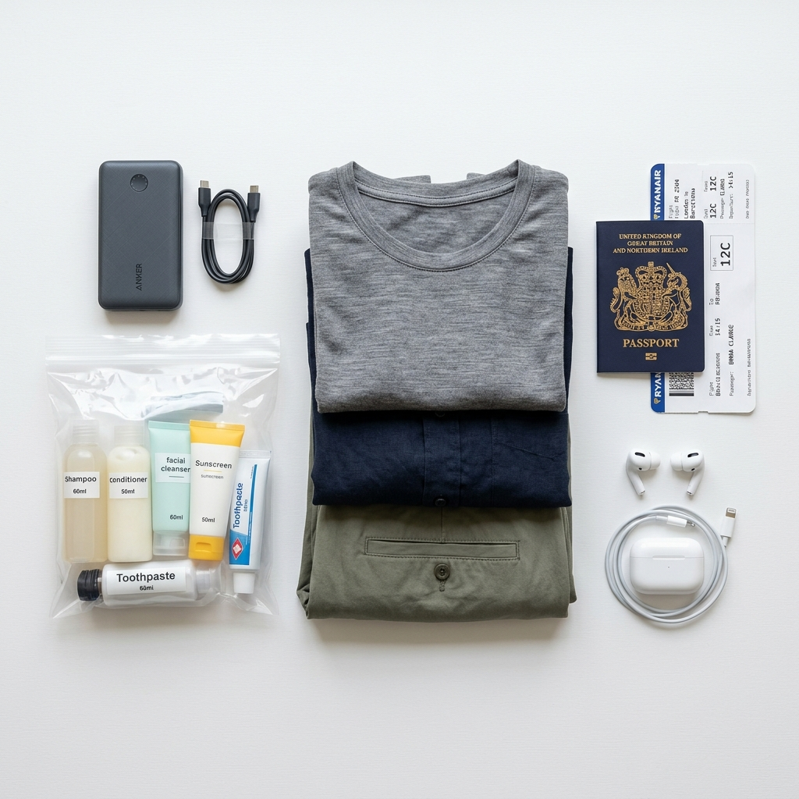
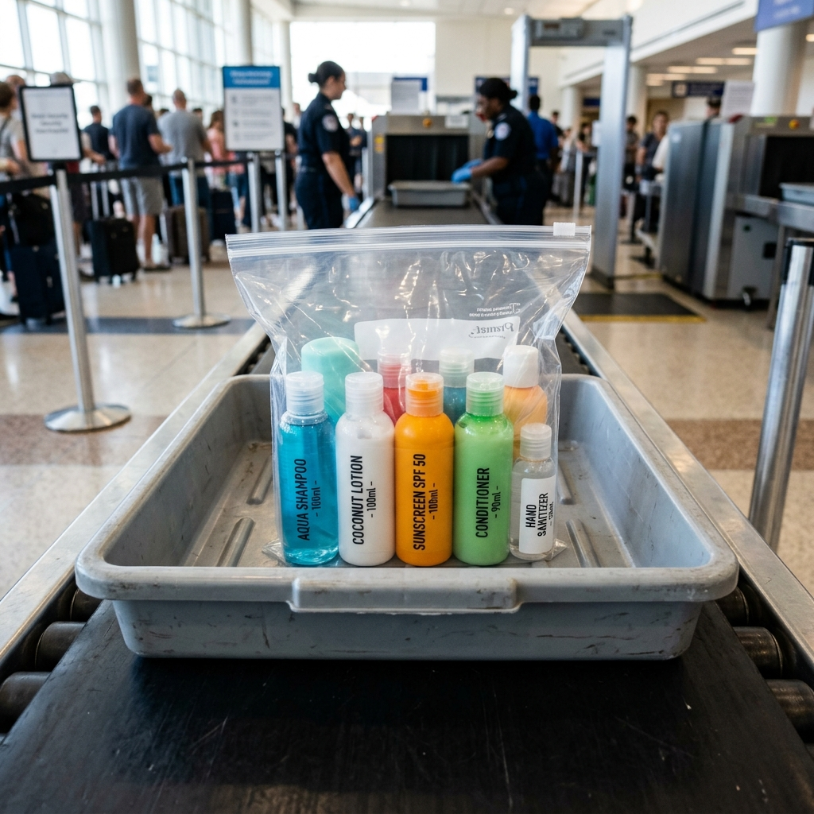
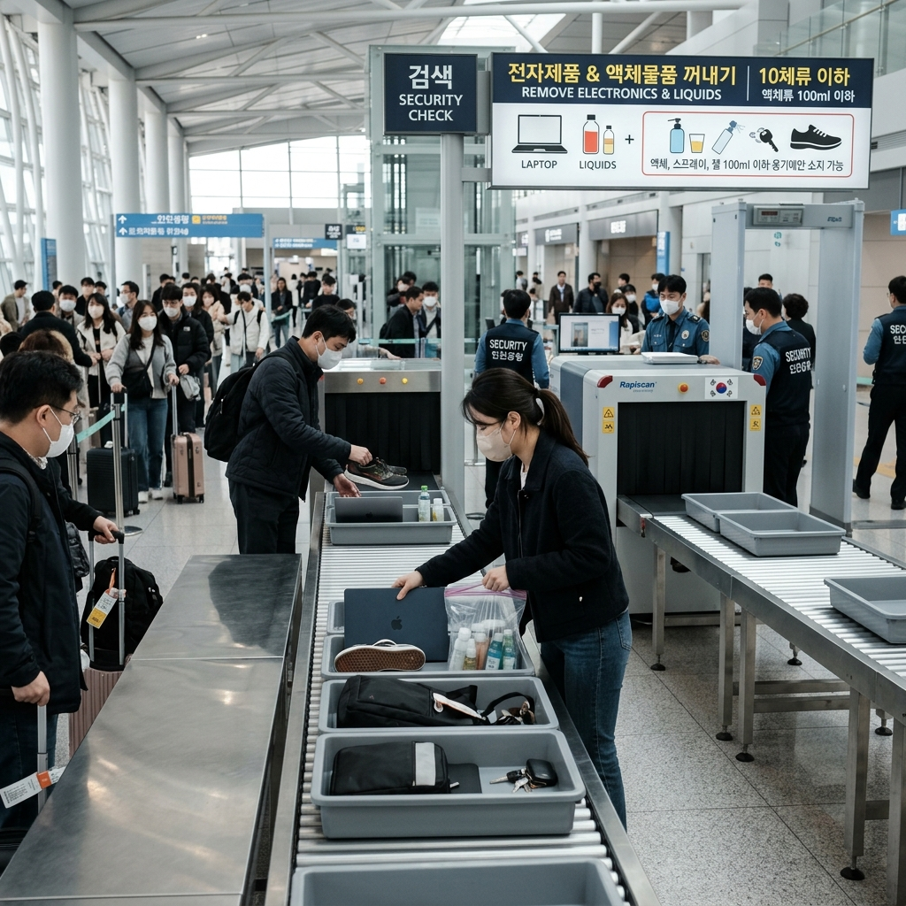

항공기 수하물 규정 실전 정리 — 파워뱅크 몇 mAh까지, 화장품 100ml 룰 예외는
작년 여름휴가 직전에 공항에서 당황스러운 일을 겪었습니다. 오랫동안 쓰던 20,000mAh 파워뱅크를 갖고 탑승하려다가 보안 검색대에서 제지당한 것입니다. '기내 반입 가능하다'는 걸 알고 있었는데, 모델 스티커에 Wh 표기가 없어서 검색대 직원이 확인을 요청했습니다. 결국 계산해서 통과는 했지만 수십 명이 줄 서 있는 상황에서 식은땀이 흘렀습니다.
그 경험 이후 항공 수하물 규정을 제대로 정리해 두어야겠다 싶었습니다. 이 글에서는 실제 공항에서 자주 발생하는 상황을 중심으로 핵심 규정을 정리합니다.

공항 보안 검색대 수하물 X-ray 검사 / AI 제작 이미지
01 | 기내 반입 vs 위탁 수하물, 기본 구분
항공 수하물은 크게 기내 반입 수하물(기내에 들고 타는 것)과 위탁 수하물(체크인 카운터에서 부치는 것) 두 종류입니다.
기내 반입 수하물은 객실 상단 선반 또는 앞 좌석 밑에 보관하는 짐입니다. 위험물이나 폭발물이 아닌 이상 대부분 기내에 가지고 탈 수 있지만, 날카로운 물건·액체류·보조배터리 등은 별도 규정이 있습니다.
위탁 수하물은 화물칸에 실리며, 항공사가 정한 무게·개수 초과 시 추가 요금이 발생합니다. 반대로 리튬 배터리류는 위탁 수하물로는 부칠 수 없고 반드시 기내 반입해야 합니다. 이 구분만 알아도 절반은 해결됩니다.
02 | 위탁 수하물 무게 제한, 항공사별 기준
위탁 수하물 무게 기준은 항공사마다 다릅니다. 운임 등급별로도 다르므로 출발 전 항공사 홈페이지에서 반드시 확인하세요.
일반적인 기준(2026년 기준, 이코노미 일반석):
• 대한항공·아시아나: 국내선 15kg / 국제선 이코노미 23kg 1개
• 제주항공·진에어·티웨이·에어서울: 기본 포함 없음, 구매 시 15kg~20kg
• 에미레이트·카타르항공: 이코노미 30kg
수하물 규정은 노선에 따라서도 다를 수 있습니다. 미국·캐나다 노선은 kg 기준이 아닌 개수제(PC제, 개당 23kg)를 적용하는 항공사가 있습니다. 예약 완료 후 이메일에서 수하물 조건을 한 번 더 확인하세요.
✍️ 직접 경험한 수하물 팁
LCC(저비용항공사)로 여행할 때 짐 무게를 잘못 계산해서 공항 카운터에서 초과 요금을 낸 적이 있습니다. 당시 1kg 초과에 3만 원 넘는 요금이 나왔습니다. 미리 온라인으로 사전 구매했더라면 5,000~1만 원에 해결할 수 있었습니다. 짐이 많다고 예상되면 체크인 전날 항공사 앱에서 미리 수하물을 추가해두는 습관을 들이세요.
03 | 기내 반입 크기 제한과 개수
기내 반입 수하물 크기는 대부분의 항공사가 가로+세로+높이 합계 115cm(또는 120cm) 이하, 무게 7~12kg을 기준으로 합니다. 캐리어로 치면 보통 21인치 이하입니다.
• 대한항공: 55×40×20cm 이하, 10kg 이하, 1개 + 소형 개인 소지품 1개
• 아시아나항공: 55×40×20cm 이하, 10kg 이하
• 제주항공: 55×40×20cm 이하, 10kg 이하
소형 백팩이나 핸드백은 별도 허용됩니다. 좌석 밑에 들어가는 크기면 대부분 추가 비용 없이 기내 반입 가능합니다. 다만, 기내 선반 공간이 꽉 찰 경우 항공사 임의로 위탁 수하물로 처리될 수 있습니다.

기내 반입 허용 액체류 100ml 지퍼백 준비 / AI 제작 이미지
04 | 액체·젤·에어로졸 100ml 규정 — 예외와 함정
기내 반입 액체류는 용기 당 100ml(100g) 이하, 투명 지퍼백(1L 이하) 1개에 모두 담아야 합니다. 한국 출발 국제선 보안 검색에서 적용됩니다.
주의할 예외 사항:
• 용기가 200ml라도 100ml 이하만 남아있다면? → 허용 안 됩니다. 용기 자체가 100ml 이하여야 합니다.
• 액체 스틱형 데오도란트·고형 파운데이션 → 고체로 분류, 100ml 규정 적용 안 됨.
• 유아식·의약품·처방전 동반 약품 → 적정량 기내 반입 가능 (항공사·공항 따라 다름)
• 면세점 구매 액체류(STEB 봉투) → 100ml 초과여도 기내 반입 가능, 단 환승 시 개봉 시 문제 발생 가능
요즘 화장품 패키지 중 100ml 표기인데 실제 내용물은 150ml인 경우가 있습니다. 용기 뒷면 ml 표기를 꼭 확인하세요.
05 | 보조배터리(파워뱅크) 기내 반입 — mAh와 Wh 환산
보조배터리는 위탁 수하물(화물칸) 불가이고, 반드시 기내 반입해야 합니다.
허용 기준은 용량(Wh, 와트시)으로 결정됩니다. 대부분의 배터리는 mAh로 표기하므로 환산이 필요합니다.
Wh = mAh × 전압(V) ÷ 1,000 (리튬이온 전압은 보통 3.7V)
환산 기준:
• 100Wh 이하: 기내 반입 OK (항공사 허가 불필요)
• 100~160Wh: 항공사 사전 허가 필요, 개인당 최대 2개
• 160Wh 초과: 기내 반입 불가
10,000mAh ≒ 37Wh, 20,000mAh ≒ 74Wh → 모두 100Wh 이하로 일반 허용 범위입니다. 다만 고용량 랩탑 배터리 내장 모델이나 대형 파워 스테이션(100Wh 초과)은 별도 확인이 필요합니다.
06 | 항공사별 보조배터리 개수 제한 차이
ICAO·IATA 기준은 개인당 보조배터리 최대 2개이나, 항공사별로 더 엄격하게 제한하는 경우가 있습니다.
• 중국계 항공사: 100Wh 이하 1개만 허용하는 곳도 있음
• 국내 항공사: 대부분 100Wh 이하 최대 2개 허용
• 동남아 일부 노선: 100Wh 이하 1개 제한하는 경우 있음
파워뱅크를 2개 이상 갖고 다니는 분이라면 항공사 공식 사이트 수하물 규정 페이지에서 배터리 항목을 직접 확인하세요. 규정은 연도에 따라 변경될 수 있으니 출발 전 재확인을 권장합니다.

여행 수하물 준비 체크리스트 / AI 제작 이미지
07 | 기내 반입 절대 금지 물품
다음 품목은 기내 반입이 절대 불가합니다:
• 칼, 가위(7cm 초과), 공구류(스패너, 해머 등)
• 총기류·탄약류(합법적 소지 여부 무관, 신고 후 위탁 가능)
• 발화성·폭발물류
• 스프레이류(360ml 초과), 라이터용 연료
• 전기충격기, 호신용품
이 중 칼이나 가위류는 위탁 수하물에는 넣을 수 있습니다. 캠핑 칼이나 요리용 칼을 갖고 여행하는 경우 반드시 캐리어에 넣어 위탁 처리하세요. 기내 반입 시도 시 보안 검색에서 압수됩니다.
08 | 수하물 초과 요금 절약 방법
• 사전 온라인 추가 구매: 공항 카운터보다 50~70% 저렴. 항공사 앱/홈페이지에서 출발 24시간 전까지 구매 가능
• 짐 나눠 싸기: 동행자가 있으면 무게를 균등 배분
• 항공사 카드 혜택 활용: 일부 신용카드에 무료 수하물 추가 혜택 포함
• 마일리지 회원 등급 활용: 실버 이상 등급에서 무게·개수 추가 허용
• 공항에서 택배 발송: 귀국 시 짐이 많으면 국내 택배로 먼저 집으로 보내는 것이 초과 요금보다 저렴한 경우가 있음
LCC 여행이 잦다면 수하물 포함된 요금제를 사전 비교하는 것이 전체 여행 비용을 줄이는 지름길입니다.
09 | 수하물 분실·파손 시 대처 방법
위탁 수하물 수령 시 파손을 발견하면 공항을 벗어나기 전에 즉시 항공사 수하물 센터(한국어로 '로스트&파운드'라고도 함)에 신고해야 합니다. 출구를 나온 후에는 처리가 훨씬 복잡해집니다.
• 파손 신고: 탑승 구간 항공사 카운터에서 PIR(재산불규칙신고서) 작성
• 분실 신고: 탁송 배기지 태그(짐표)와 여권, 탑승권 소지
• 보상 범위: 몬트리올 협약 기준 약 1,288SDR(특별인출권) 한도. 환율에 따라 다르나 약 200만 원 내외
• 여행자보험: 보험 가입 시 항공사 보상 초과분을 청구 가능
여행자보험에서 수하물 손해 담보 조항을 확인하고 출발 전 가입을 검토하세요. 비용 대비 효과가 높은 담보입니다.
📝 작성자 메모
항공 수하물 규정은 항공사·노선·연도에 따라 자주 바뀝니다. 이 글은 일반적인 기준을 설명하며, 정보 기준일: 2026-06-29. 출발 전 이용 항공사 공식 홈페이지 수하물 규정 페이지를 반드시 재확인하세요. 특히 보조배터리 Wh 계산이 헷갈리면 항공사 고객센터에 직접 문의하는 것이 가장 확실합니다.
#기내반입규정2026
#파워뱅크기내반입
#수하물무게초과
#액체기내반입
#항공수하물
#100ml규칙예외
#위탁수하물요금
#보조배터리mAh
#해외여행준비
#여름휴가공항팁